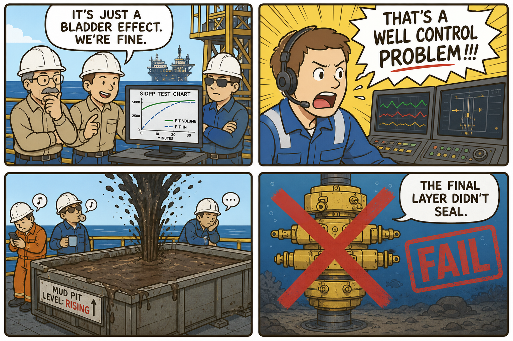
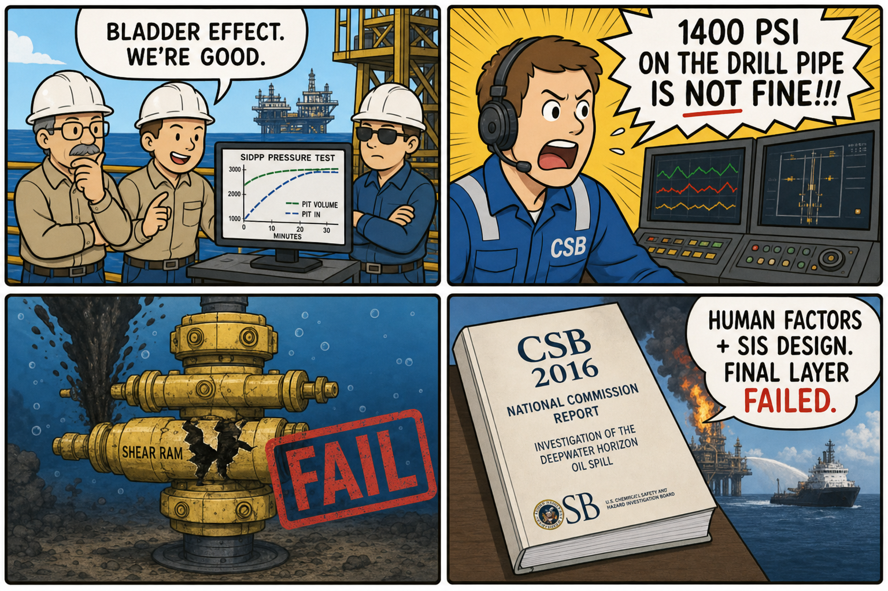

Module 09 / Oil & Gas — Offshore Drilling Deepwater Horizon (2016)
A disregarded pressure test, alarm normalization, and the final protection layer that didn't seal the well.
The Script — Cinematic Anchor
Dialogue Extract
Scene Visual — Comic Strip

Dramatis Personae → OT Mapping
- Mike Williams (Chief Electronics Technician)→Instrumentation & Controls / SIS Engineer
- Jimmy Harrell (Offshore Installation Manager)→Site Operations Manager
- BP well site leaders→Client Representative / Operations Authority under schedule pressure
- Andrea Fleytas→Control Room Operator — initiated the general alarm
Diegetic Failure Mode
An anomalous negative-pressure test result is explained away rather than escalated as a well-control warning sign. Mud-pit monitoring is not actively watched during a concurrent, unrelated operation, delaying kick recognition. When the blowout begins, the subsea Blowout Preventer's shear-ram and deadman/autoshear systems — the final independent protection layer — fail to seal the well.
Theoretical ICS Architecture
Purdue Model Impact
Protocols & Control Logic
The BOP's deadman and autoshear functions are SIS-equivalent latching safety functions, designed to activate independent of communication, hydraulic, or power loss from the surface. The relevant modern framing is a High-Integrity Pressure Protection System (HIPPS)-class final layer of protection — its availability depends entirely on standby power and proof-testing discipline, not just on the logic being correct.
The Plant — Empirical Grounding
Plant Visual — Comic Strip

Real-World Incident Precedent
Deepwater Horizon (2016) dramatizes the actual Macondo well blowout of April 20, 2010. The authoritative technical accounts are the U.S. Chemical Safety Board's 2016 report and the National Commission on the BP Deepwater Horizon Spill (2011). Both found that an anomalous negative-pressure test reading — roughly 1,400 psi on the drill pipe against 0 psi on the kill line — was explained away using an inapplicable "bladder effect" theory rather than treated as a well-control warning sign.
Cinematic vs. Reality Matrix
| Dimension | Media Depiction (The Script) | Industrial Reality (The Plant) |
|---|---|---|
| Failure Vector | A dramatized dispute between BP representatives and rig crew over interpreting the negative-pressure test. | Per CSB/National Commission: the anomalous test reading was explained away with an unverified "bladder effect" theory rather than escalated — a documented instance of confirmation bias in test interpretation. |
| Time to Impact | Kick-to-explosion is shown as a fast, escalating sequence over the film's final act. | Hydrocarbon flow began undetected approximately 40–50 minutes before the first explosion, with multiple missed indicators (mud returns, pit volume increases) during that window. |
| Operator Visibility | Crew notice physical signs (mud spraying) essentially at the last moment. | Matches reality closely: mud-pit level monitoring was not being actively watched during a concurrent, unrelated displacement operation — a documented alarm-management and workload gap, compounded by rig alarms reportedly inhibited to avoid nuisance night-time alerts. |
| Failsafe Behavior | The BOP fails to seal the well despite manual and automatic activation attempts. | CSB found the blind shear ram failed to fully seal the wellbore, partly because the drill pipe had buckled off-center under well-flow forces before shear activation — outside the BOP's tested design envelope — and the deadman/autoshear system did not activate as intended due to a low-voltage/dead-battery condition in one control pod. |
Root-Cause Analysis (RCA)
Classification: Human Factors / Alarm Management + Process DesignTest misinterpretation and inhibited alarms (Human Factors) combined with a BOP shear-ram design envelope that did not account for off-center pipe buckling under dynamic well-flow loading (Process Design) — a compound failure at the final SIS/ESD protection layer, following upstream misjudgment of a key well-integrity test.
Engineering Runbook & Countermeasures
Telemetry Envelope
| Parameter | Normal / Baseline | Anomaly Threshold | Condition at Incident |
|---|---|---|---|
| Negative-pressure test — drill pipe | Bleeds to and holds at 0 psi | Any non-zero sustained reading is a well-control indicator | ~1,400 psi observed, incorrectly attributed to a "bladder effect" |
| Mud pit volume | Stable during a static well condition | Any unexplained rise flags a possible kick | Increased by several barrels over the ~40-minute pre-explosion window, unrecognized |
Mitigation / Recovery Protocol
- Standardized negative-pressure test acceptance criteria: treat any anomalous reading as a well-control indicator requiring the test to be repeated or escalated, never explained away by an unverified alternative theory.
- Continuous, dedicated mud-pit/return-flow monitoring: maintain independent of concurrent unrelated rig activities to avoid the attention-allocation gap documented at Macondo.
- BOP design verification against off-center pipe loading: ensure shear rams can seal under realistic dynamic well-flow conditions, not only idealized centered-pipe conditions.
- Independent power/battery verification for SIS control pods: confirm deadman/autoshear standby power integrity on a defined maintenance interval, since SIS availability depends on it.
- Alarm management review: eliminate any practice of inhibiting safety-relevant alarms for operational convenience.